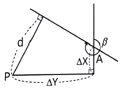
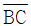
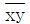
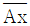
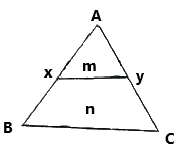
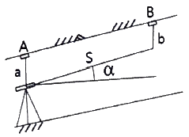

지적기사 (2021-03-07 기출문제)
1과목: 지적측량
1. 오차의 성질에 관한 설명으로 옳지 않은 것은?
- 정오차는 측정횟수에 비례하여 증가한다.
- 부정오차는 일정한 크기와 방향으로 나타난다.
- 우연오차는 상차라고도 하며, 측정횟수의 제곱근에 비례한다.
- 1회 측정 후 우연오차를 b라 하면, n회 측정의 우연오차는 b√n 이다.
(정답률: 82%)

2. 점 P에서 점 A를 지나며 방위각이 β인 직선까지의 수선장(d)을 구하는 식으로 옳은 것은?

- d = △X cosβ - △Y sinβ
- d = △Y cosβ - △X sinβ
- d = △X sinβ - △Y cosβ
- d = △Y siβ - △X cosβ
(정답률: 74%)
3. 광파기측량방법과 도선법에 따른 지적도근점 간의 수평거리를 2회 측정한 결과가 각각 149.95m, 150.⑤m 이었을 때 결정거리는?
- 149.90m
- 150.00m
- 150.10m
- 재측정
(정답률: 55%)
4. A, B 기지점으로부터 소구점의 표고를 계산하고자 A, B 각 지점에서 소구점까지 평면거리를 관측한 결과 1km, 2km 이었다. 이 때 두 기지점으로부터 구한 소구점의 표고에 대한 교차한계는?
- 0.1m
- 0.2m
- 0.3m
- 0.4m
(정답률: 61%)
5. 경위의측량방법과 다각망도선법에 따른 지적도근점의 관측에서 시가지 지역, 축척변경지역 및 경계점좌표등록부 시행 지역의 수평각 관측방법은?
- 교회법
- 배각법
- 방위각법
- 방향각법
(정답률: 62%)
6. 축척이 1200분의 1인 지역 토지의 면적을 전자면적측정기로 2회 측정한 결과가 각각 138232m2, 138347m2 이었을 때 처리방법으로 옳은 것은? (단, 측정한 면적의 교차가 허용면적 이하인 경우)
- 재측량하여야 한다.
- 평균치를 측정면적으로 한다.
- 작은 면적을 측정면적으로 한다.
- 큰 면적으로 측정면적으로 한다.
(정답률: 81%)
7. 지적도근점측량에 의하여 계산된 연결오차가 허용범위 이내인 경우 연결오차의 배분방법이 옳은 것은? (단, 방위각법에 의하는 경우를 기준으로 한다.)
- 각 측선장에 비례하여 배분한다.
- 각 방위각의 크기에 비례하여 배분한다.
- 각 측선장의 반수에 비례하여 배분한다.
- 각 측선의 종횡선차 길이에 비례하여 배분한다.
(정답률: 59%)
8. 삼각형의 각 변이 길이가 각각 30m, 40m, 50m 일 때 이 삼각형의 면적은?
- 600m2
- 756m2
- 1000m2
- 1200m2
(정답률: 67%)
9. 경위의측량방법에 따른 지적삼각점의 관측 및 계산에 대한 기준으로 옳은 것은?
- 1측회의 폐색 공차는 ±40초 이내로 한다.
- 관착은 20초독 이상의 경위의를 사용한다.
- 1방향각의 수평각 공차는 30초 이내로 한다.
- 삼각형의 각 내각은 30° 이상 150° 이하로 한다.
(정답률: 67%)
10. 지적삼각점측량의 시행에 있어 내각을 n회 측정하였을 경우, 경중률(weight)의 부여 방법은?
- n
- n2
- 1/n
- n(n-1)
(정답률: 55%)
11. 지적측량에서의 직각좌표는 어떤 투영법으로 표시함을 기준으로 하는가? (단, 세계측지계에 따르지 아니하는 지적측량의 경우)
- 벳셀법
- 가우스법
- 가우스쿠르거법
- 가우스상사이중투영법
(정답률: 79%)
12. 평판측량에서 발생할 수 있는 오차가 아닌 것은?
- 시준오차
- 연결오차
- 외심오차
- 정준오차
(정답률: 63%)
13. 지적삼각보조점의 수평각을 관측하는 방법에 대한 기준으로 옳은 것은?
- 도선법에 따른다.
- 2대회의 방향관측법에 따른다.
- 3대회의 방향관측법에 따른다.
- 관측 지역에 따라 방위각법과 배각법을 혼용한다.
(정답률: 69%)
14. 지구를 평면으로 가정할 때 정도 1/106에서 거리오차는? (단, 지구의 곡률반경은 6370km 이다.)
- 1.2cm
- 2.2cm
- 3.2cm
- 4.2cm
(정답률: 56%)
15. 전파기 또는 광파기측량방법에 따라 다각망도선법으로 지적삼각보조점측량을 할 때의 기준으로 틀린 것은?
- 1도선의 거리는 4km 이하로 한다.
- 삼각형의 각 내각은 30도 이상 150도 이하로 한다.
- 3점 이상의 기지점을 포함한 결합다각방식에 따른다.
- 1도선의 점의 수는 기지점과 교점을 포함하여 5점 이하로 한다.
(정답률: 70%)
16. 지적삼각점측량에서 점표가 기울어진 상단을 시준 관측하고 편심거리(ℓ)를 측정한 결과 시준선에서 직각 방향으로 1.6m이었다. 이로 인한 각도오차(θ)는? (단, 삼각점 간 거리(S)는 3km 이다.)
- 0′ 34″
- 1′ 34″
- 1′ 50″
- 2′ 50″
(정답률: 56%)
17. 반지름 11km 이내의 면적을 기준으로 평면측량을 시행한다면 이 측량의 정밀도는?
- 1/5000
- 1/10000
- 1/500000
- 1/1000000
(정답률: 37%)
18. 토지의 이동에 따른 도면의 제도 방법 기준이 틀린 것은?
- 이동 전 지번 및 지목을 말소하고 새로 설정된 지번 및 지목을 가로쓰기로 제도한다.
- 지적공부에 등록된 토지가 바다가 된 때에는 경계, 지번 및 지목을 말소한다.
- 도곽선에 걸쳐 있는 필지를 분할하는 경우 그 도곽선 밖에 필지의 경계, 지번 및 지목을 제도한다.
- 합병할 때에는 합병되는 필지 사이의 경계, 지번 및 지목을 말소한 후 새로 부여하는 지번과 지목을 제도한다.
(정답률: 52%)
19. 지적확장측량 결과도 작성 시 포함하여야 할 사항으로 틀린 것은?
- 경계점 간 계산거리 및 실측거리
- 확정 경계선에 지상구조물 등이 걸리는 경우에는 그 위치현황
- 지적기준점 및 그 번호와 지적기준점 간 방위각 및 거리
- 확정된 필지의 경계(경계점좌표를 전개하여 연결한 선) 및 면적
(정답률: 24%)
20. 다음 중 구면삼각법을 평면삼각법으로 간주하여 계산할 때 적용하는 이론은?
- 가우스(Gauss) 정리
- 르장드르(Legendre) 정리
- 뫼스니에(Measnier) 정리
- 가우스쿠르거(Gauss-Kruger) 정리
(정답률: 68%)
2과목: 응용측량
21. 그림에서

와 병행한
면적을 m : n = 1 : 4의 비율로 분할하고자 한다. AB = 75m일 때
의 거리는?
- 15.0m
- 18.8m
- 33.5m
- 37.5m
(정답률: 46%)
22. 회전주기가 일정한 위성을 이용한 원격탐사의 특징에 대한 설명으로 옳지 않은 것은?
- 탐사된 자료가 즉시 이용될 수 있으며, 재해 및 환경문제 해결에 편리하다.
- 관측이 좁은 시야각으로 행하여지므로 얻어진 영상은 정사투영에 가깝다.
- 회전주기가 일정하므로 원하는 지점 및 시기에 관측하기가 쉽다.
- 짧은 시간 내에 넓은 지역을 동시에 측정할 수 있으며 반복측정이 가능하다.
(정답률: 53%)
23. 지성선 상의 중요점의 위치에 표고를 측정하여, 이 점들을 기준으로 등고선을 삽입하는 등고선 측정방법은?
- 좌표점법
- 종단점법
- 횡단점법
- 직접법
(정답률: 52%)
24. 비행고도 3000m 인 항공기에서 초점거리 150mm인 카메라로 촬영한 실제거리 50m 교량의 수직사진에서의 길이는?
- 1.0mm
- 1.5mm
- 2.0mm
- 2.5mm
(정답률: 54%)
25. 지형도에 의한 댐의 저수량 측정에 사용할 수 있는 방법으로 적당한 것은?
- 영선법
- 채색법
- 음영법
- 등고선법
(정답률: 39%)
26. 원심력의 변화를 곡선의 길이에 따라 점진적으로 반영하도록 직선부와 곡선부 사이에 삽입하는 곡선은?
- 횡단곡선
- 완화곡선
- 반향곡선
- 복심곡선
(정답률: 62%)
27. 지형도 작성 시 활용하는 지형 표시 방법과 거리가 먼 것은?
- 방사법
- 영선법
- 채색법
- 점고법
(정답률: 62%)
28. 노선측량에서 단곡선의 설치방법 중 접선과 현이 이루는 각을 이용하여 곡선을 설치하는 방법은?
- 편각법
- 중앙 종거법
- 장현 지거법
- 좌표에 의한 설치법
(정답률: 55%)
29. 항공삼각측량(aerial triangulation) 방법에 대한 설명으로 옳은 것은?
- 다항식조정법(polynomial method)은 가장 최근에 제안된 방법이다.
- 독립모델조정법(independent model triangulation)은 공선조건식을 사용한다.
- 광속조정법(bundle adjustment method)은 공면조건식을 이용한다.
- 광속조정법(bundle adjustment method)은 사진좌표를 기본 단위로 사용한다.
(정답률: 47%)
30. GNSS의 구성요소에 해당되지 않는 것은?
- 위성에 대한 우주 부분
- 지상 관제소에서의 제어 부분
- 경영 활동에 위한 영업부분
- 측량용 수신기에 대한 사용자 부분
(정답률: 74%)
31. 곡선의 종류 중 원곡선 두 개가 접속점에서 각각 다른 방향으로 굽어진 형태의 곡선으로 주로 계곡부에 이용되는 것은?
- 단곡선
- 복선곡선
- 완화곡선
- 반향곡선
(정답률: 52%)
32. 직접수준측량에서 2km를 왕복하는데 오차가 ±4mm 발생하였다면 이와 같은 정밀도로 하여 4.5km를 왕복했을 때의 오차는?
- ±5.0mm
- ±5.5mm
- ±6.0mm
- ±6.5mm
(정답률: 43%)
33. 터널 내에서 천정에 고정점 A, B를 관측한 결과가 그림과 같을 때 두 지점간의 고저차는? (단, a=1.15m, S=25.30m, b=1.75m, α=30°)

- 11.50m
- 13.25m
- 20.76m
- 22.51m
(정답률: 65%)
34. GNSS의 오차 중 반송파가 지상의 수신기를 향하여 직접 송신되지 못하고 주변의 다른 장애물에 반사된 후 수신기에 수신될 때 생기는 오차는?
- 수신기오차
- 위성의 궤도오차
- 대기조건에 의한 오차
- 다중 전파경로에 의한 오차
(정답률: 65%)
35. GNSS에서 의사거리 결정에 영향을 주는 오차의 원인으로 거리가 먼 것은?
- 대기굴절에 의한 오차
- 위성의 시계오차
- 수신 위치의 기온 변화에 의한 오차
- 위성의 기하학적 위치에 따른 오차
(정답률: 58%)
36. 수준측량에서 굴절오차와 관측거리의 관계를 설명한 것으로 옳은 것은?
- 거리의 제곱에 비례한다.
- 거리의 제곱에 반비례한다.
- 거리의 제곱근에 비례한다.
- 거리의 제곱근에 반비례한다.
(정답률: 35%)
37. 지상거리 500m인 두 개의 수직터널에 의하여 깊이 700m의 터널 내외를 연결하는 경우에 두 수직터널의 지상거리와 터널 내 연결점의 거리 차는? (단, 지구반지름 R=6370km 이다.)
- 4.5m
- 5.5m
- 4.5cm
- 5.5cm
(정답률: 29%)
38. 초점기리 100mm인 카메마로 촬영한 축척 1:5000 수직사진에 사진크기 23cm×23cm, 종중복도 60%인 경우에 기선고도비는?
- 0.61
- 0.92
- 1.09
- 0.25
(정답률: 48%)
39. 곡선반지름 R=80m, 곡선길이 L=20m일 때 클로소이드의 매개변수 A의 값은?
- 40m
- 60m
- 100m
- 160m
(정답률: 54%)
40. A점의 표고가 100.56m이고, A와 B점의 지표에 세운 표척의 관측값이 각각 a=+5.5m, b=+2.3m이라 할 때 B점의 표고는?
- 97.36m
- 101.46m
- 103.76m
- 108.36m
(정답률: 56%)
3과목: 토지정보체계론
41. 스파게티(Spaghetti) 모형에 대한 설명으로 옳지 않은 것은?
- 자료구조가 단순하여 파일의 용량이 작다.
- 하나의 점(X, Y좌표)을 기본으로 하고 있어 구조가 간단하므로 이해하기 쉽다.
- 객체들 간의 공간 관계에 대한 정보가 입력되므로 공간분석에 효율적이다.
- 상호 연관성에 관한 정보가 없어 인접한 객체들의 특징과 관련성을 파악하기 힘들다.
(정답률: 51%)
42. 데이터 품질 측정의 구성요소에 해당하지 않는 것은? (단, KS X ISO 19157:2013을 기준으로 한다.)
- 설명
- 이름
- 정의
- 완전성
(정답률: 51%)
43. 지적공부의 효율적인 관리 및 활용을 위하여 지적정보 전담 관리기구를 설치·운영하는 자는?
- 국토교통부장관
- 행정안전부장관
- 국토지리정보원장
- 한국국토정보공사장
(정답률: 64%)
44. 토지 고유번호의 코드 구성 기준으로 옳은 것은?
- 행정구역코드 9자리, 대장구분 2자리, 본번 4자리, 부번 4자리, 합계 19자리로 구성
- 행정구역코드 9자리, 대장구분 1자리, 본번 4자리, 부번 5자리, 합계 19자리로 구성
- 행정구역코드 10자리, 대장구분 1자리, 본번 4자리, 부번 4자리, 합계 19자리로 구성
- 행정구역코드 10자리, 대장구분 1자리, 본번 3자리, 부번 5자리, 합계 19자리로 구성
(정답률: 64%)
45. 국토교통부장관이 지적공부에 관한 전산자료를 갱신하여야 하는 기간의 기준으로 옳은 것은?
- 수시
- 매 월
- 매 분기
- 매 년
(정답률: 42%)
46. 데이터에 대한 정보로서 데이터의 내용, 품질, 조건 및 기타 특성에 대한 정보를 포함하는 정보의 이력서라 할 수 있는 것은?
- 인덱스(Index)
- 라이브러리(Library)
- 메타데이터(Metadata)
- 데이터베이스(Database)
(정답률: 55%)
47. DBMS의 “정의” 기능에 대한 설명이 아닌 것은?
- 데이터의 물리적 구조를 명세한다.
- 데이터의 논리적 구조와 물리적 구조 사이의 변환이 가능하도록 한다.
- 데이터베이스의 논리적 구조와 그 특성을 데이터 모델에 따라 명세한다.
- 데이터베이스를 공용하는 사용자의 요구에 따라 체계적으로 접근하고 조작할 수 있다.
(정답률: 37%)
48. 국가지리정보체계사업(NGIS)의 단계별 주요 목표에 대한 설명으로 옳은 것은?
- 제1차 사업은 1995년 시작되었으며, 수치지도의 표준화 활용방안을 주요 목표로 설정하였다.
- 제2차 사업은 2001년 시작되었으며, 지적도 전산화 구축을 주요 목표로 하였다.
- 제3차 사업은 2006년부터 시작되었으며, 수치지도의 작성을 주요 목표로 하였다.
- 제4차 사업은 2010년부터 시작되었으며, 언제·어디서나·누구나 자유롭게 활용할 수 있는 그린(Green)공간정보 구축을 목표로 하였다.
(정답률: 41%)
49. 필지중심토지정보시스템 중 지적소관청에 일반적으로 많이 사용하는 시스템은?
- 지적측량시스템
- 지적행정시스템
- 지적공부관리시스템
- 지적측량과작성시스템
(정답률: 55%)
50. 다음 NGIS의 데이터 교환 표준 포맷은?
- MOSS
- DX-90
- TIGER
- SDTS
(정답률: 64%)
51. 스캐닝 방식을 이용하여 지적전산 파일을 생성할 경우, 선명한 영상을 얻기 위한 방법으로 옳지 않은 것은?
- 해상도를 최대한 낮게 한다.
- 원본 형상의 보존 상태를 양호하게 한다.
- 하프톤 방식의 스캐닝 시에는 되도록 속도를 느리게 한다.
- 크기가 큰 영상은 영역을 세분하여 차례로 스캐닝 한다.
(정답률: 69%)
52. 레스터데이터 구조에 비하여 벡터데이터 구조가 갖는 장점으로 옳지 않은 것은?
- 자료구조가 단순하다.
- 위상자료구조를 가질 수 있다.
- 복잡한 현실세계에 대한 세밀한 묘사를 할 수 있다.
- 세밀한 묘사에 비해 데이터 용량이 상대적으로 작다.
(정답률: 54%)
53. 공간정확도를 확인하기 위해서는 샘플링이 필요하다. 모집단에 대한 기존지식을 활용하여 모집단을 몇 개의 소집단으로 구분하고, 각 소집단 내에서 랜덤(random)추출하는 방법으로 구성요소들이 전체로써 모집단의 구성요소들보다 더욱 동질적이 될 수 있도록 추출하는 방법은?
- 계통샘플링(systematic sampling)
- 단순무작위샘플링(simple random sampling)
- 층화무작위샘플링(stratified random sampling)
- 층화계통비정렬샘플링(stratified systematic unaligned sampling)
(정답률: 53%)
54. 다음 중 데이터 표준화의 내용에 해당하지 않는 것은?
- 데이터 교환의 표준화
- 데이터 분석의 표준화
- 데이터 품질의 표준화
- 데이터 위치참조의 표준화
(정답률: 23%)
55. 사용자가 데이터베이스에 접근하여 데이터를 처리할 수 있도록 하는 것으로 데이터의 검색, 삽입, 삭제 및 갱신 등과 같은 조작을 하는데 사용되는 데이터 언어는?
- DLL(Data Link Language)
- DCL(Data Control Language)
- DDL(Data Definition Language)
- DML(Data Manipulation Language)
(정답률: 49%)
56. 스캐너를 활요한 공간자료 구축과정에 대한 설명으로 옳지 않은 것은?
- 손상된 도면을 입력하기 어렵고 벡터화가 불완전한 부분들의 인식·점검이 필요하며 래스터 및 벡터자료 편집용 소프트웨어가 필요하다.
- 스캐너의 정밀도에 따라 이미지 자료의 변형이 발생하며 벡터라이징 과정에서 자료를 선택적으로 분리하기 어렵다는 단점이 있다.
- 스캐너 장비는 평판 스캐너와 원통형 스캐너가 있으며 일반적으로 평판 스캐너가 성능이 우수하여 더 많이 활용된다.
- 파장이 적어질수록 래스터의 수가 늘어나서 스캐닝의 결과로서 생성되는 데이터의 양이 늘어난다는 단점이 있다.
(정답률: 47%)
57. 속성자료 입력 시 발생할 수 있는 가장 일반적인 오차는?
- 도면인식 오차
- 자동입력 오차
- 통계처리 오차
- 입력차 착오 오차
(정답률: 61%)
58. OGC(Open GIS Consortium, 또는 Open Geodata Consortium)에 대한 설명으로 틀린 것은?
- 지리정보를 객체지향적으로 정의하기 위한 명세서라 할 수 있다.
- 지리정보와 관련된 여러 처리방식에 대하여 개방형 시스템적인 접근을 시도하였다.
- 지리정보를 활용하고 관련 응용분야를 주요 업무로 하고 있는 공공기관 및 민간기관으로 구성된 컨소시엄이다.
- OGIS(Open GIS)를 개발하고 추진하는데 필요한 합의된 절차를 정립할 목적으로 비영리의 협회형태로 설립되었다.
(정답률: 35%)
59. 다음 중 래스터데이터의 자료압축 방법이 아닌 것은?
- 블록코드(block code) 방법
- 체인코드(chain code) 방법
- 트랜스코드(trans code) 방법
- 런렝스코드(run-length code) 방법
(정답률: 57%)
60. 다음 중 LIS/GIS의 기능적 요소에 해당하지 않는 것은?
- 데이터 생산
- 데이터 입력
- 데이터 처리
- 데이터 해석
(정답률: 45%)
4과목: 지적학
61. 지압(地押)조사에 대한 설명으로 옳은 것은?
- 신고, 신청에 의하여 실시하는 토지조사이다.
- 토지의 이동 측량 성과를 검사하는 성과검사이다.
- 분쟁지의 경계와 소유자를 확정하는 토지조사이다.
- 무신고 이동지를 발견하기 위하여 실시하는 토지검사이다.
(정답률: 67%)
62. 토지조사사업에 대한 설명으로 틀린 것은?
- 사정권자는 임시 토지조사국장이었다.
- 조사측량기관은 임시 토지조사국이었다.
- 도면축적은 1/1200, 1/2400, 1/3000 이었다.
- 조사대상은 전국 평야부의 토지 및 낙산임야이다.
(정답률: 58%)
63. 다음 중 지적의 요건으로 볼 수 없는 것은?
- 안전성
- 정확성
- 창조성
- 효율성
(정답률: 77%)
64. 우리나라 지적제도의 기본이념에 해당하는 것은?
- 지적민정주의
- 인적편성주의
- 지적형식주의
- 지적비밀주의
(정답률: 76%)
65. 다음 지적재조사사업에 관한 설명으로 옳은 것은?
- 지적재조사사업은 지적소관청이 시행한다.
- 지적소관청은 지적재조사사업에 관한 기본 계획을 수립하여야 한다.
- 지적재조사사업에 관한 주요 정책을 심의·의결하기 위하여 지적소관청 소속으로 중앙지적재조사위원회를 둔다.
- 시·군·구의 지적재조사사업에 관한 주요 정책을 심의·의결하기 위하여 국토교통부장관 소속으로 시·군·구 지적재조사위원회를 둘 수 있다.
(정답률: 59%)
66. 다음 중 지적궤도와 등기제도를 처음부터 일원화하여 운영한 국가는?
- 대만
- 독일
- 일본
- 네덜란드
(정답률: 59%)
67. 입안제도(立案制度)에 대한 설명으로 옳지 않은 것은?
- 입안은 매수인의 소재관(所在官)에게 제출하였다.
- 토지매매 후 100일 이내에 하는 명의변경 절차이다.
- 입안 받지 못한 문기는 효력을 인정받지 못하였다.
- 조선시대에 토지거래를 관(官)에 신고하고 증명을 받는 것이다.
(정답률: 55%)
68. 다음 중 지적의 개념 연결이 잘못된 것은?
- 법지적 - 소유지적
- 세지적 - 과세지적
- 수치지적 - 입체지적
- 다목적지적 – 정보지적
(정답률: 70%)
69. 다음 경계 중 정밀지적측량이 수행되고 지적소관청으로부터 사정의 행정처리가 완료된 것은?
- 고정경계
- 보증경계
- 일반경계
- 특정경계
(정답률: 66%)
70. 토지의 이익에 영향을 미치는 문서의 공적등기를 보전하는 것을 주된 목적으로 하는 등록제도는?
- 권원 등록제도
- 소극적 등록제도
- 적극적 등록제도
- 날인증서 등록제도
(정답률: 43%)
71. 조선시대 이성계와 그를 지지하는 신진세력들에 의하여 추진된 제도로서, 토지의 국유화에 의한 사전(私田)의 재분배와 수확량의 10분의 5가 일반화되었던 수조율(收租率)을 대폭 경감하여 국고와 경작자 사이에 개재하는 중간착취를 배제하고자 하는 목적으로 시행된 제도는?
- 과전법
- 역분전
- 전시과
- 정전제
(정답률: 64%)
72. 다목적 지적제도를 구축하는 이유로 가장 거리가 먼 것은?
- 토지 공개념 도입 용이
- 토지소유현황 파악 용이
- 정확한 토지 과세정보의 획득
- 중복업무 방지로 인한 국가 토지행정의 효율성 증대
(정답률: 55%)
73. 신라시대에 시행한 토지측량 방식으로 토지를 여러 형태로 구분하여 측량하기 쉽도록 하였던 것은?
- 결부제
- 경무법
- 연산법
- 구장산술
(정답률: 62%)
74. 현행 지목 중 차문자(次文字) 표기를 따르지 않는 것은?
- 주차장
- 유원지
- 공장용지
- 종교용지
(정답률: 61%)
75. 다음 중 오늘날의 토지대장과 유사한 것이 아닌 것은?
- 문기(文記)
- 양안(量案)
- 도전장(都田帳)
- 타량성책(打量成冊)
(정답률: 54%)
76. 토지조사사업 당시 지번의 부번방식으로 가장 많이 사용된 것은?
- 기우식
- 단지식
- 사행식
- 절충식
(정답률: 60%)
77. 조선지세령(朝鮮地稅令)에 관한 내용으로 틀린 것은?
- 1943년 공포되어 시행되었다.
- 전문 7장과 부칙을 포함한 95개 조문으로 되어 있었다.
- 토지대장, 지적도, 임야대장에 관한 모든 규칙을 통합하였다.
- 우리나라 세금의 대부분인 지세에 관한 사항을 규정하는 것이 주목적이었다.
(정답률: 67%)
78. 일반적으로 양안에 기재된 사항에 해당되지 않는 것은?
- 지번, 면적
- 측량순서, 토지등급
- 토지형태, 사표(四標)
- 신구 토지소유자, 토지가격
(정답률: 66%)
79. 일필지에 대한 내용으로 틀린 것은?
- 자연적으로 형성된 토지단위
- 토지소유권이 미치는 구획단위
- 토지의 법률적 단위로서 거래단위
- 국가의 권력으로 결정하는 등록단위
(정답률: 69%)
80. 지번의 특성에 해당되지 않는 것은?
- 토지의 식별
- 토지의 가격화
- 토지의 특정화
- 토지의 위치 추측
(정답률: 77%)
5과목: 지적관계법규
81. 토지 등의 출입 등에 따른 손실보상에 관하여, 손실을 보상할 자와 손실을 받은 자의 협의가 성립되지 않거나 협의를 할 수 없는 경우 재결을 신청할 수 있는 곳은?
- 지적소관청
- 중앙지적위원회
- 지방지적위원회
- 관할 토지수용위원회
(정답률: 62%)
82. 부등산등기법에 따라 등기할 수 있는 권리가 아닌 것은?
- 소유권
- 저당권
- 점유권
- 지상권
(정답률: 61%)
83. 국토의 계획 및 이용에 관한 법률상 용도지역의 지정목적으로 옳은 것은?
- 도시기능을 증진시키고 미관·경관·안전 등을 도모
- 시가지의 무질서한 확산 방지로 계획적·단계적인 토지이용의 도모
- 산업과 인구의 과대한 도시 집중을 방지하여 기반시설의 설치에 필요한 용지 확보
- 토지의 이용 및 건축물의 용도, 건폐율, 용적률, 높이 등을 제한함으로써 토지의 경제적·효율적 이용 도모
(정답률: 62%)
84. 공간정보의 구축 및 관리 등에 관한 법령상 지목의 구분에 따라, 한강을 이용한 경정장의 지목으로 옳은 것은?
- 하천
- 유원지
- 잡종지
- 체육용지
(정답률: 58%)
85. 지적재조사사업에 관한 기본계획 수립 시 포함하여야 하는 사항으로 옳지 않은 것은?
- 지적재조사사업의 시행기간
- 지적재조사사업에 관한 기본방향
- 지적재조사사업비의 시·군별 배분계획
- 지적재조사사업에 필요한 인력 확보계획
(정답률: 60%)
86. 다음 중 지번을 새로이 부여해야 할 경우가 아닌 것은?
- 등록전환
- 신규등록
- 임야분할
- 지목변경
(정답률: 61%)
87. 토지의 지번이 결번되는 사유에 해당되지 않는 것은?
- 지번의 변경
- 토지의 분할
- 행정구역의 변경
- 도시개발사업의 시행
(정답률: 49%)
88. 공간정보의 구축 및 관리 등에 관한 법률상 1년 이하의 징역 또는 1천만원 이하의 벌금대상으로 옳은 것은?
- 정당한 사유 없이 측량을 방해한 자
- 측량업 등록사항의 변경신고를 하지 아니한 자
- 무단으로 측량성과 또는 측량기록을 복제한 자
- 고시된 측량성과에 어긋나는 측량성과를 사용한 자
(정답률: 50%)
89. 측량업의 등록취소 및 영업정지에 관한 설명으로 옳지 않은 것은?
- 다른 사람에게 자기의 측량업 등록증을 빌려 준 경우 등록취소 사유가 된다.
- 거짓이나 그 밖의 부정한 방법으로 측량업을 등록한 경우 등록을 취소하여야 한다.
- 영업정지기간 중에 측량업을 영위한 경우일지라도 등록취소가 아닌 재차의 영업정지 명령이 내려질 수 있다.
- 지적측량업자가 법 규정에 의한 지적측량수수료보다 과소하게 받은 경우도 등록취소 및 영업정지 처분의 대상이 된다.
(정답률: 54%)
90. 부동산등기법상 합필의 등기를 할 수 없는 것은?
- 소유권 등기가 있는 토지
- 전세권 등기가 있는 토지
- 승역지에 하는 지역권의 등기가 있는 토지
- 합필하려는 모든 토지에 있는 등기언인 및 그 연원일과 접수번호가 상이한 저당권에 관한 등기가 있는 토지
(정답률: 56%)
91. 공간정보의 구축 및 관리 등에 관한 법률상 규정된 지목의 종류가 옳지 않은 것은?
- 운동장
- 유원지
- 잡종지
- 철도용지
(정답률: 67%)
92. 다음 중 지적공부에 등록하는 토지의 표시가 아닌 것은?
- 소유자
- 지번과 지목
- 토지의 소재
- 경계 또는 좌표
(정답률: 60%)
93. 국토의 계획 및 이용에 관한 법률에 따른 도시·군관리계획에 포함되지 않는 것은?
- 지적불부합지역의 지적재조사에 관한 계획
- 기반시설의 설치·정비 또는 개량에 관한 계획
- 용도지역·용도지구의 지정 또는 변경에 관한 계획
- 지구단위계획구역의 지정 또는 변경에 관한 계획과 지구단위계획
(정답률: 40%)
94. 축척변경 시행지역의 토지는 어느 때에 토지의 이동이 있는 것으로 보는가?
- 청산금 산출일
- 청산금 납부일
- 축척변경 승인공고일
- 축척변경 확정공고일
(정답률: 66%)
95. 경위의측량방법으로 세부측량을 한 경우 측량결과도에 적어야 하는 사항이 아닌 것은?
- 방위각
- 측량기하적
- 지상에서 측정한 거리
- 측량대상 토지의 점유현황선
(정답률: 50%)
96. 축척변경에 따른 청산금을 산정한 결과 증가된 면적에 대한 청산금의 합계와 감소된 면적에 대한 청산금의 합계에 차액이 생긴 경우 부족액은 누가 부담하는가?
- 지적소관청
- 지방자치단체
- 국토교통부장관
- 증가된 면적의 토지소유자
(정답률: 66%)
97. 전파기 또는 광파기측량방법에 따른 지적삼각점의 관측과 계산 기준으로 틀린 것은?
- 표준편차가 ±(5mm+5ppm) 이상인 정밀측거기를 사용한다.
- 삼각형의 내각계산은 기지각과의 차가 ±40초 이내이어야 한다.
- 점간거리는 3회 측정하고, 원점에 투영된 수평거리로 계산하여야 한다.
- 측정치의 최대치와 최소치의 교차가 평균치의 10만분의 1 이하일 때는 그 평균치를 측정거리로 한다.
(정답률: 54%)
98. 지적공부의 '대장'으로만 나열된 것은?
- 토지대장, 임야도
- 대지권등록부, 지적도
- 공유지연명부, 토지대장
- 경계점좌표등록부, 일람도
(정답률: 58%)
99. 다음 중 면적의 최소 등록단위가 다른 하나는? (단, 경계점좌표등록부에 등록하는 지역의 경우는 고려하지 않는다.)
- 1/600
- 1/1000
- 1/2400
- 1/6000
(정답률: 48%)
100. 지목변경 및 합병을 하여야 하는 토지가 있을 때 작성하는 현지조사서에 포함되어야 하는 사항에 해당되지 않는 것은?
- 조사자의 의견
- 소유자 변동이력
- 토지의 이용현황
- 관계법령의 저촉여부
(정답률: 40%)